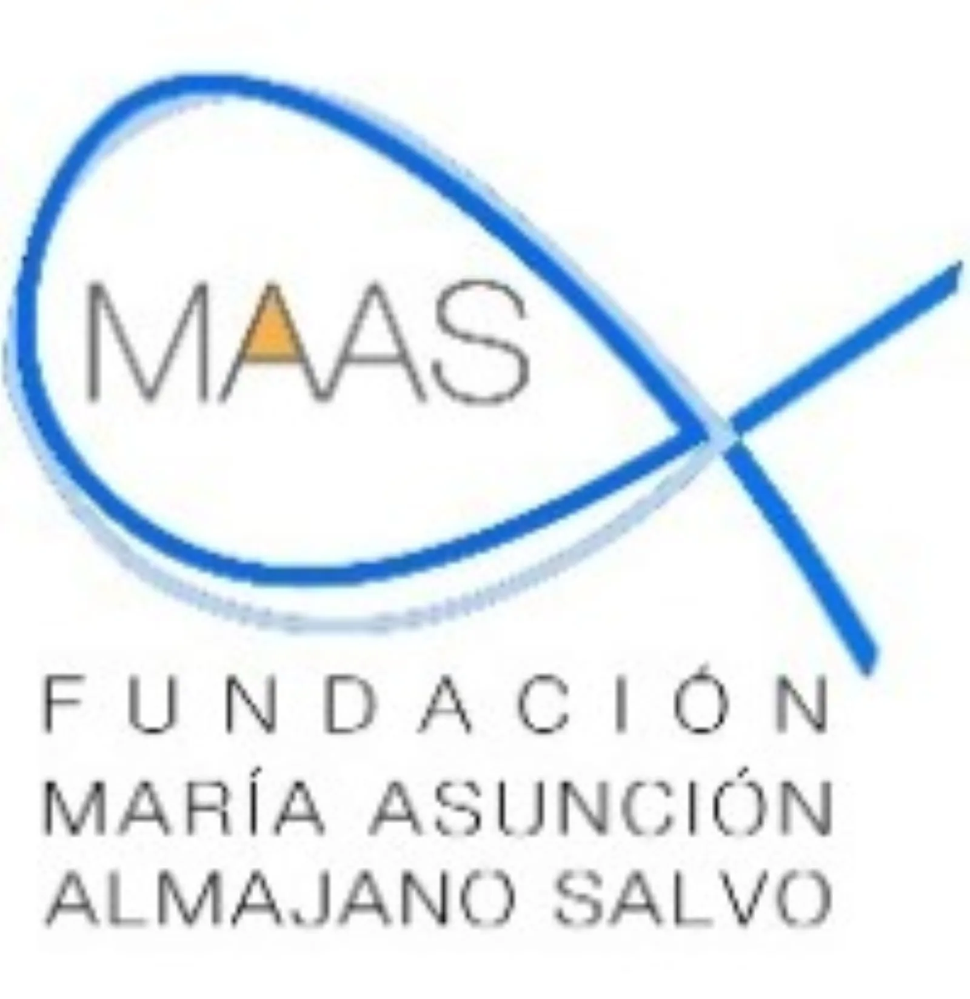

La Fundación Leucemia y Linfoma abre la convocatoria de la Beca Asun Almajano 2026 para apoyar proyectos de investigación en enfermedades oncohematológicas y fomentar avances clínicos en leucemia, linfoma y mieloma.
La Fundación Leucemia y Linfoma convoca la Beca “Asun Almajano” 2026 para impulsar la investigación en enfermedades oncohematológicas La Fundación Leucemia y Linfoma (FLL) ha abierto la convocatoria de la Beca “Asun Almajano” 2026, una iniciativa destinada a financiar proyectos de investigación que contribuyan a la mejora en el diagnóstico y tratamiento de la leucemia, el linfoma, el mieloma y otras enfermedades hematológicas afines La beca cuenta con una dotación económica de 20.000 euros, que se destinarán íntegramente al investigador o equipo adjudicatario, sin contemplar costes indirectos u overhead. El periodo de ejecución del proyecto se desarrollará entre el 10 de junio de 2026 y el 21 de julio de 2027, con una duración mínima de nueve meses y máxima de doce. Dirigida a profesionales e investigadores especializados Podrán optar a esta convocatoria médicos especialistas en Hematología u Oncología, MIR en el último año de formación, especialistas en Pediatría con acreditación postgraduada específica en Hematología u Oncología, así como licenciados en Biología, Farmacia o Química con al menos cuatro años de formación postgraduada o adscripción a un centro hospitalario o grupo de investigación vinculado a estas patologías. Asimismo, podrán concurrir grupos de investigación con experiencia acreditada en el ámbito de la Hematología u Oncología. Las solicitudes deberán presentarse antes del 30 de abril de 2026, siendo la fecha límite de evaluación definitiva el 2 de junio de 2026. Impulso a la investigación para mejorar la atención La Beca “Asun Almajano” cuenta con el apoyo económico de la Fundación María Asunción Almajano Salvo y se desarrolla en el marco del Convenio de Colaboración firmado entre ambas entidades. Desde GEPAC valoramos especialmente este tipo de iniciativas, que refuerzan el compromiso del movimiento asociativo y de las entidades colaboradoras con la investigación biomédica como herramienta clave para avanzar hacia diagnósticos más precisos, tratamientos más eficaces y una atención cada vez más personalizada. Las bases completas de la convocatoria y la información detallada pueden consultarse en www.leucemiaylinfoma.com.